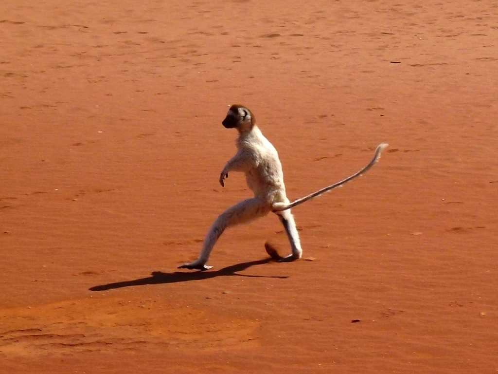
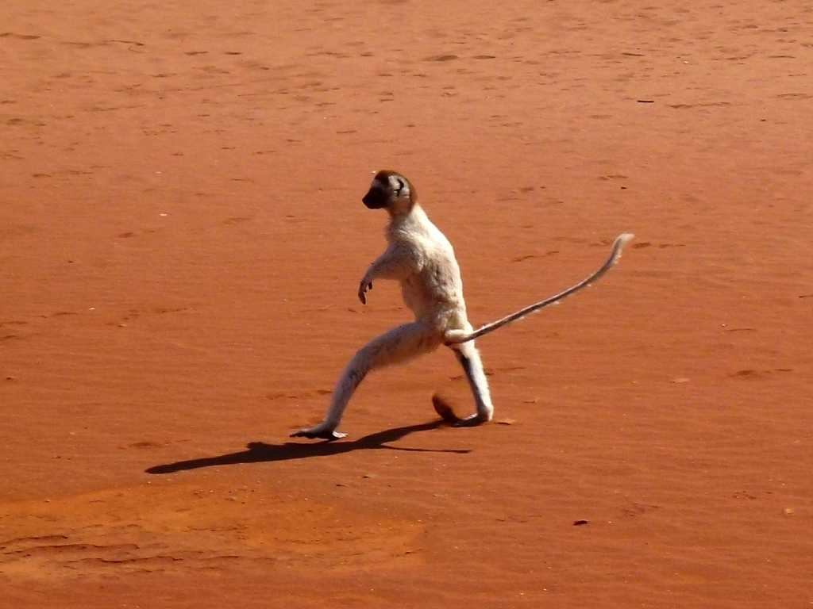
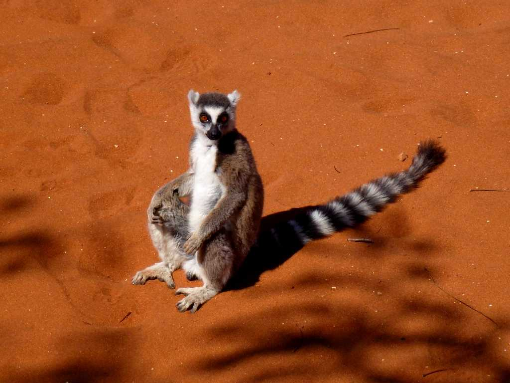
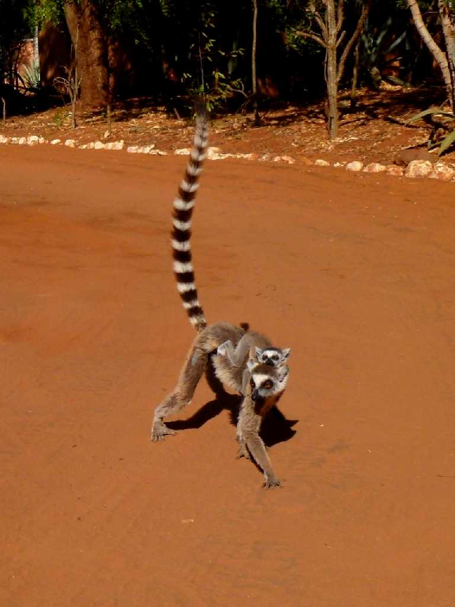
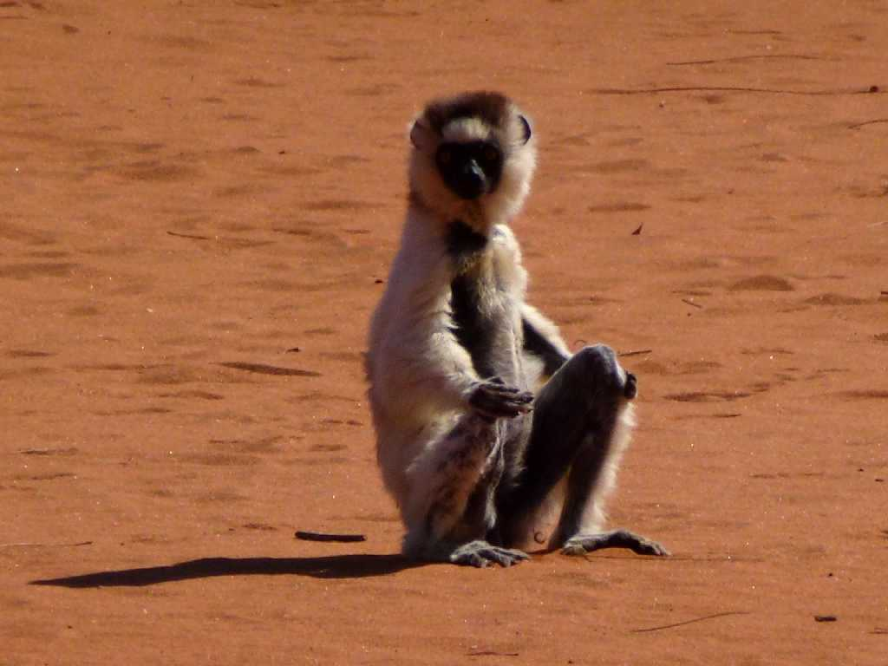
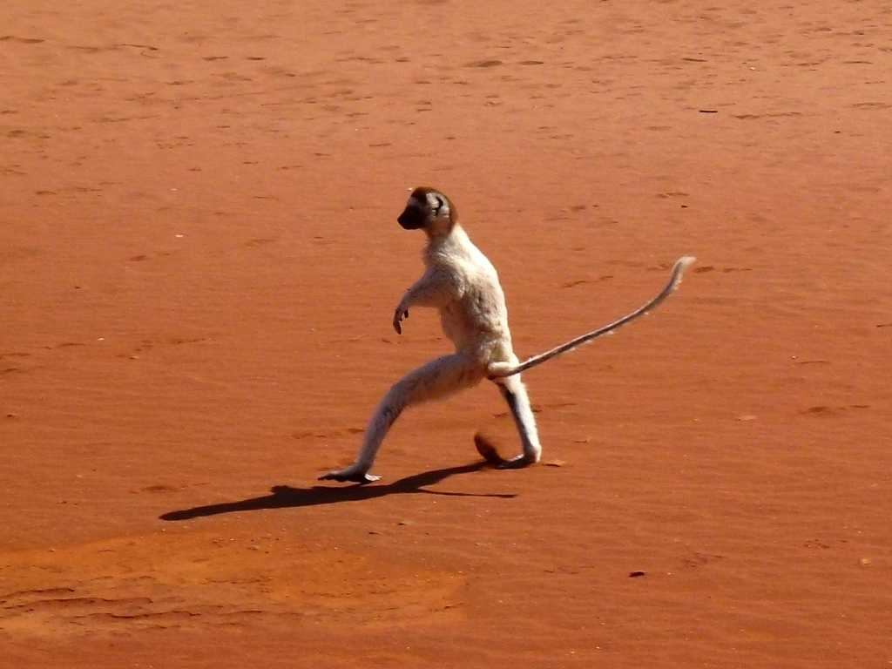
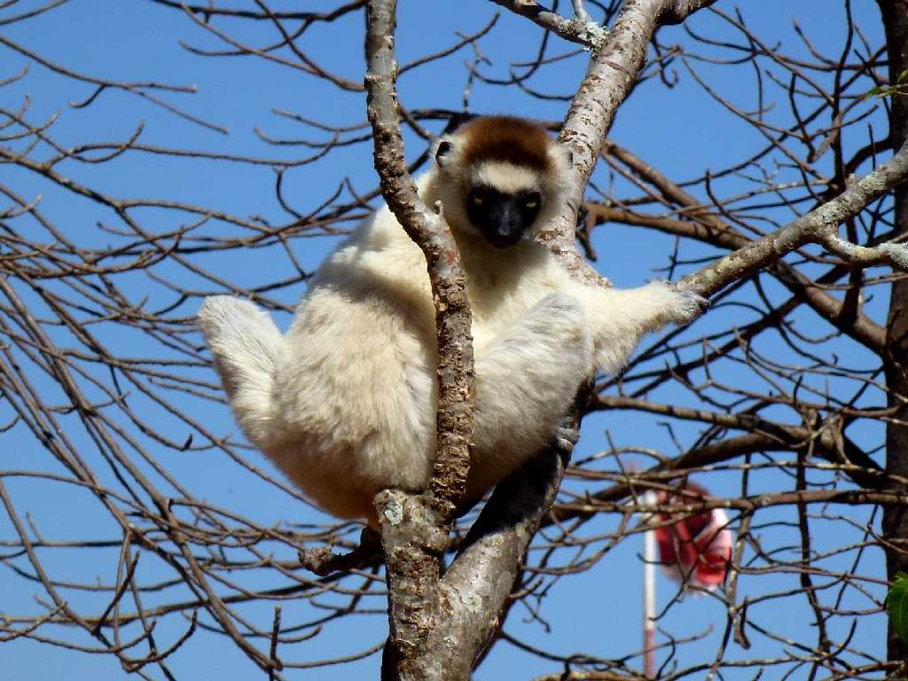
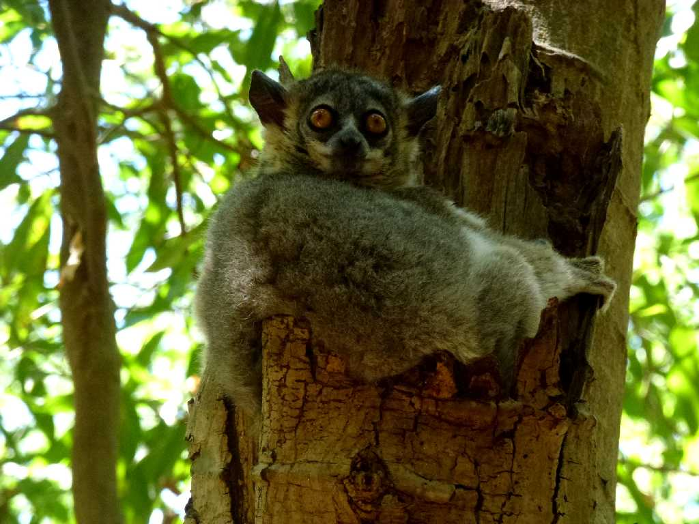
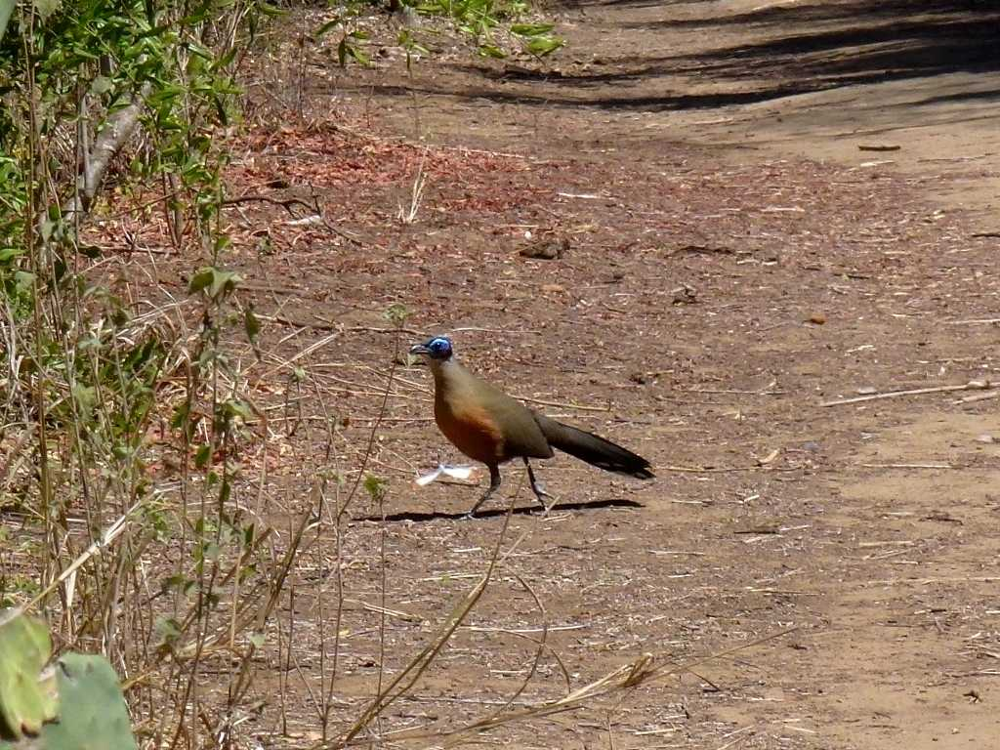
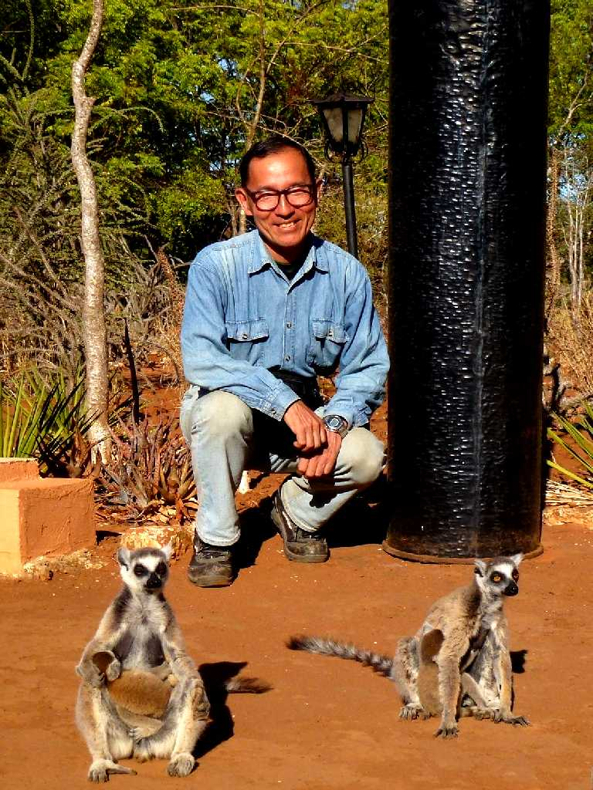

Ring-tailed Lemur Berenty
ベレンティー保護区のワオキツネザル 哺乳類猿目キツネザル下目キツネザル科ワオキツネザル属

Child Ring-tailed Lemur
今年９月頃に生まれた子供を連れてワオキツネザルが登場

Verreaux's Sifaka Berenty
ベレンティー保護区のベローシファカ 哺乳類猿目キツネザル下目インドリ科シファカ属

Jumping Verreaux's Sifaka
本来は長い腕を使い木の枝から枝へと移動していたが人間が森林伐採をしたことから地上を移動せざるを得なくなり横飛びを始めたと云われている

Verreaux's Sifaka

Red-fronted Brown Lemur Berenty
ベレンティー保護区のアカビタイチャイロキツネザル 哺乳類猿目キツネザル下目キツネザル科キツネザル属

White-footed Sportive Lemur Berenty
ベレンティー保護区のイタチキツネザル 哺乳類猿目キツネザル下目イタチキツネザル科

Giant Coua Berenty
ベレンティー保護区のオニジカッコー

October 25 2013 Ring-tailed Lemur Berenty
保護区のためそっと近づいても人を怖がらずワオキツネザルと記念撮影